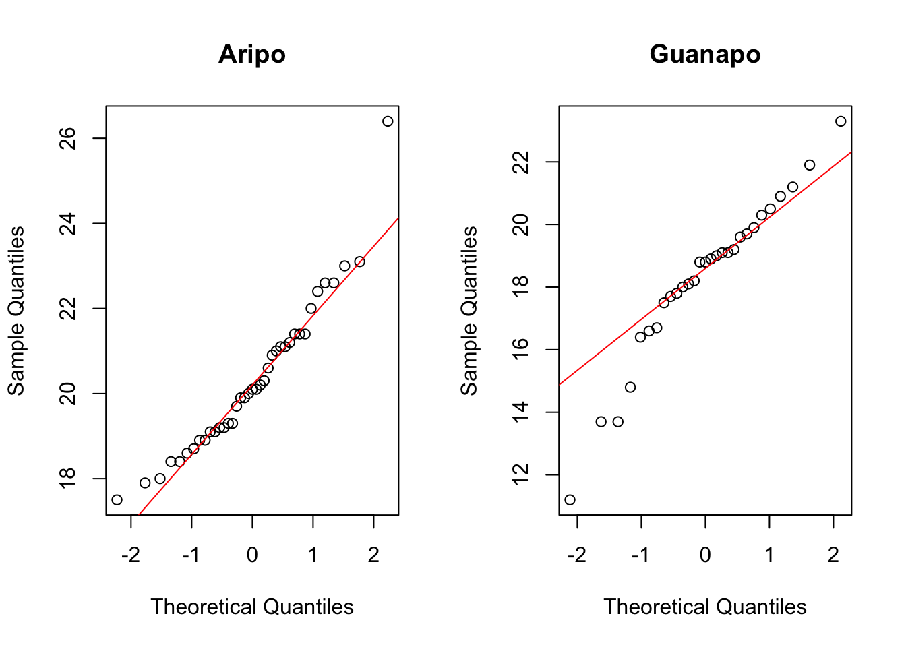
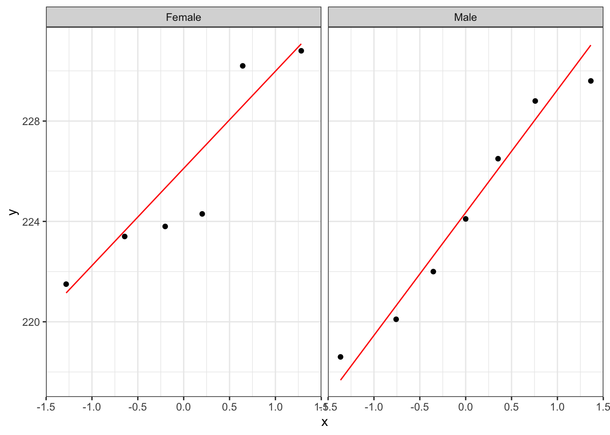

Student’s t-test
Libraries and functions
| Libraries | Description |
|---|---|
library(tidyverse) |
A collection of R packages designed for data science |
library(rstatix) |
Converts base R stats functions to a tidyverse-friendly format. Also contains extra functionality that we’ll use. |
| Functions | Description |
|---|---|
rstatix::get_summary_stats() |
Computes summary statistics |
rstatix::levene_test() |
Perform Levene’s test for equality of variance (non-normally distributed data) |
bartlett.test() |
Perform Bartlett’s test for equality of variance (normally distributed data) |
ggplot2::stat_qq() |
Plots a Q-Q plot for comparison with a normal distribution. |
ggplot2::stat_qq_line() |
Adds a comparison line to the Q-Q plot. |
| Libraries | Description |
|---|---|
library(car) |
Companion to Applied Regression, provides additional statistical functionality. |
| Function | Description |
|---|---|
aggregate() |
Splits the data into subsets, computes summary statistics for each, and returns the result in a convenient form |
unstack() |
Converts a stacked data frame into an unstacked data frame (or a list if the lengths of the samples are different) |
bartlett.test() |
Perform Bartlett’s test for equality of variance (normally distributed data) |
car::leveneTest() |
Perform Levene’s test for equality of variance (non-normally distributed data) |
t.test() |
Performs a one-sample t-test, Student’s t-test and Welch’s t-test in later sections. |
qqnorm() |
Plots a Q-Q plot for comparison with a normal distribution. |
qqline() |
Adds a comparison line to the Q-Q plot. |
shapiro.test() |
Performs a Shapiro-Wilk test for normality. |
| Libraries | Description |
|---|---|
plotnine |
The Python equivalent of ggplot2. |
pandas |
A Python data analysis and manipulation tool. |
scipy.stats |
A Python module containing statistical functions. |
| Functions | Description |
|---|---|
pandas.DataFrame.read_csv |
Reads in a .csv file |
pandas.DataFrame.head() |
Plots the first few rows |
pandas.DataFrame.describe() |
Gives summary statistics |
pandas.DataFrame.groupby() |
Group DataFrame using a mapper or by a Series of columns |
pandas.DataFrame.query() |
Query the columns of a DataFrame with a boolean expression |
scipy.stats.shapiro() |
Performs the Shapiro-Wilk test |
scipy.stats.levene() |
Performs Levene’s test for equality of variance |
scipy.stats.bartlett() |
Performs Bartlett’s test for equality of variance |
scipy.stats.ttest_ind() |
Calculate the T-test for the means of two independent samples of scores |
plotnine.stats.stat_qq() |
Plots a Q-Q plot for comparison with a normal distribution. |
plotnine.stats.stat_qq_line() |
Adds a comparison line to the Q-Q plot. |
Data and hypotheses
For example, suppose we now measure the body lengths of male guppies (in mm) collected from two rivers in Trinidad; the Aripo and the Guanapo. We want to test whether the mean body length differs between samples. We form the following null and alternative hypotheses:
- \(H_0\): The mean body length does not differ between the two groups \((\mu A = \mu G)\)
- \(H_1\): The mean body length does differ between the two groups \((\mu A \neq \mu G)\)
We use a two-sample, two-tailed t-test to see if we can reject the null hypothesis.
- We use a two-sample test because we now have two samples.
- We use a two-tailed t-test because we want to know if our data suggest that the true (population) means are different from one another rather than that one mean is specifically bigger or smaller than the other.
- We’re using Student’s t-test because the sample sizes are big and because we’re assuming that the parent populations have equal variance (We can check this later).
The data are stored in the file data/CS1-twosample.csv.
Let’s read in the data and have a quick look at the first rows to see how the data is structured.
Make sure you have downloaded the data (see: Datasets) and placed it within your working directory.
First we load the relevant libraries:
# load tidyverse
library(tidyverse)
# load rstatix, a tidyverse-friendly stats package
library(rstatix)We then read in the data and create a table containing the data.
rivers <- read_csv("data/CS1-twosample.csv")
rivers# A tibble: 68 × 2
river length
<chr> <dbl>
1 Guanapo 19.1
2 Guanapo 23.3
3 Guanapo 18.2
4 Guanapo 16.4
5 Guanapo 19.7
6 Guanapo 16.6
7 Guanapo 17.5
8 Guanapo 19.9
9 Guanapo 19.1
10 Guanapo 18.8
# … with 58 more rowsrivers_r <- read.csv("data/CS1-twosample.csv")
head(rivers_r) river length
1 Guanapo 19.1
2 Guanapo 23.3
3 Guanapo 18.2
4 Guanapo 16.4
5 Guanapo 19.7
6 Guanapo 16.6rivers_py = pd.read_csv("data/CS1-twosample.csv")
rivers_py.head() river length
0 Guanapo 19.1
1 Guanapo 23.3
2 Guanapo 18.2
3 Guanapo 16.4
4 Guanapo 19.7Summarise and visualise
Let’s first summarise the data.
summary(rivers) river length
Length:68 Min. :11.20
Class :character 1st Qu.:18.40
Mode :character Median :19.30
Mean :19.46
3rd Qu.:20.93
Max. :26.40 This gives us the standard summary statistics, but in this case we have more than one group (Aripo and Guanapo), so it might be helpful to get summary statistics per group. One way of doing this is by using the get_summary_stats() function from the rstatix library.
# get common summary stats for the length column
rivers %>%
group_by(river) %>%
get_summary_stats(type = "common")# A tibble: 2 × 11
river variable n min max median iqr mean sd se ci
<chr> <chr> <dbl> <dbl> <dbl> <dbl> <dbl> <dbl> <dbl> <dbl> <dbl>
1 Aripo length 39 17.5 26.4 20.1 2.2 20.3 1.78 0.285 0.577
2 Guanapo length 29 11.2 23.3 18.8 2.2 18.3 2.58 0.48 0.983Numbers might not always give you the best insight into your data, so we also visualise our data:
rivers %>%
ggplot(aes(x = river, y = length)) +
geom_boxplot()
summary(rivers_r) river length
Length:68 Min. :11.20
Class :character 1st Qu.:18.40
Mode :character Median :19.30
Mean :19.46
3rd Qu.:20.93
Max. :26.40 This gives us the standard summary statistics, but in this case we have more than one group (Aripo and Guanapo), so it might be helpful to get summary statistics per group. We can do this in base R using the aggregate() function.
aggregate(length ~ river,
data = rivers_r,
summary) river length.Min. length.1st Qu. length.Median length.Mean length.3rd Qu.
1 Aripo 17.50000 19.10000 20.10000 20.33077 21.30000
2 Guanapo 11.20000 17.50000 18.80000 18.29655 19.70000
length.Max.
1 26.40000
2 23.30000- The first argument defines the variable that is being used (
length) and grouping (river) - The second argument is the data frame that is used
- The third argument defines the function that is applied across the subsets (in this case that’s the
summary()function)
Numbers might not always give you the best insight into your data, so we also visualise our data:
boxplot(length ~ river,
data = rivers_r)
We can use a very similar notation as we did for the summary statistics (length ~ river), so a box plot is created per group.
rivers_py.describe() length
count 68.000000
mean 19.463235
std 2.370081
min 11.200000
25% 18.400000
50% 19.300000
75% 20.925000
max 26.400000This gives us the standard summary statistics, but in this case we have more than one group (Aripo and Guanapo), so it might be helpful to get summary statistics per group. Here we use the pd.groupby() function to group by river. We only want to have summary statistics for the length variable, so we specify that as well:
rivers_py.groupby("river")["length"].describe() count mean std min 25% 50% 75% max
river
Aripo 39.0 20.330769 1.780620 17.5 19.1 20.1 21.3 26.4
Guanapo 29.0 18.296552 2.584636 11.2 17.5 18.8 19.7 23.3Numbers might not always give you the best insight into your data, so we also visualise our data:
(
ggplot(rivers_py, aes(x = "river", y = "length"))
+ geom_boxplot()
)
The box plot does appear to suggest that the two samples have different means, and moreover that the guppies in Guanapo may be smaller than the guppies in Aripo. It isn’t immediately obvious that the two populations don’t have equal variances though (box plots are not quite the right tool for this), so we plough on. Who ever said statistics would be glamorous?
Assumptions
In order to use a Student’s t-test (and for the results to be strictly valid) we have to make three assumptions:
- The parent distributions from which the samples are taken are both normally distributed (which would lead to the sample data being normally distributed too).
- Each data point in the samples is independent of the others.
- The parent distributions should have the same variance.
In this example the first assumption can be ignored as the sample sizes are large enough (because of maths, with Aripo containing 39 and Guanapo 29 samples). If the samples were smaller then we would use the tests from the previous section.
The second point we can do nothing about unless we know how the data were collected, so again we ignore it.
The third point regarding equality of variance can be tested using either Bartlett’s test (if the samples are normally distributed) or Levene’s test (if the samples are not normally distributed).
This is where it gets a bit trickier. Although we don’t care if the samples are normally distributed for the t-test to be valid (because the sample size is big enough to compensate), we do need to know if they are normally distributed in order to decide which variance test to use.
So we perform a Shapiro-Wilk test on both samples separately.
We can use the group_by() function to group the data by river, then we perform the Shapiro-Wilk test on the length measurements:
# group data by river and perform test
rivers %>%
group_by(river) %>%
shapiro_test(length)# A tibble: 2 × 4
river variable statistic p
<chr> <chr> <dbl> <dbl>
1 Aripo length 0.936 0.0280
2 Guanapo length 0.949 0.176 Before we can do that, we need to convert the data to a format where the data is split by river:
# create a new object (a list) that contains the unstacked data
uns_rivers <- unstack(rivers_r, form = length ~ river)
# have a look at the data
uns_riversNow that we’ve separated the data by river we can perform the Shapiro-Wilk test:
shapiro.test(uns_rivers$Aripo)
Shapiro-Wilk normality test
data: uns_rivers$Aripo
W = 0.93596, p-value = 0.02802shapiro.test(uns_rivers$Guanapo)
Shapiro-Wilk normality test
data: uns_rivers$Guanapo
W = 0.94938, p-value = 0.1764We first need to split the data by river.
rivers_py.groupby("river")["length"] \
.apply(lambda x: pd.Series(stats.shapiro(x), index=['W-stat','p-value'])) \
.reset_index() river level_1 length
0 Aripo W-stat 0.935958
1 Aripo p-value 0.028023
2 Guanapo W-stat 0.949384
3 Guanapo p-value 0.176420The code is a bit convoluted and perhaps there is a more efficient way that I’m not aware of. Anyway, we can do this with the groupby() function from pandas. Next, we only select the length measurements and use the .apply() function to apply the stats.shapiro() test over each group. This returns two values per group: the W-statistic that the Shapiro-Wilk test uses and, the value we’re most interested in, the p-value. Lastly,we use the .reset_index() function to repeat the grouping name.
We can see that whilst the Guanapo data is probably normally distributed (p = 0.1764 > 0.05), the Aripo data is unlikely to be normally distributed (p = 0.02802 < 0.05). Remember that the p-value gives the probability of observing each sample if the parent population is actually normally distributed.
The Shapiro-Wilk test is quite sensitive to sample size. This means that if you have a large sample then even small deviations from normality will cause the sample to fail the test, whereas smaller samples are allowed to pass with much larger deviations. Here the Aripo data has nearly 40 points in it compared with the Guanapo data and so it is much easier for the Aripo sample to fail compared with the Guanapo data.
Exercise: Q-Q plots rivers
Create the Q-Q plots for the two samples and discuss with your neighbour what you see in light of the results from the above Shapiro-Wilk test.
# we group the data by river
# then create a panel per river
# containing the Q-Q plot for that river
rivers %>%
ggplot(aes(sample = length)) +
stat_qq() +
stat_qq_line(colour = "red") +
facet_wrap(facets = vars(river))
par(mfrow=c(1,2))
qqnorm(uns_rivers$Aripo, main = "Aripo")
qqline(uns_rivers$Aripo, col = "red")
qqnorm(uns_rivers$Guanapo, main = "Guanapo")
qqline(uns_rivers$Guanapo, col = "red")
(
ggplot(rivers_py, aes(sample = "length"))
+ stat_qq()
+ stat_qq_line(colour = "red")
+ facet_wrap("river")
)
The Q-Q plots show the opposite of what we found with the Shapiro-Wilk tests: the data for Aripo look pretty normally distributed, whereas the assumption of normality for the Guanapo data is less certain.
What to do? Well, you could be conservative and state that you are not confident that the data in either group are normally distributed. That would be a perfectly reasonable conclusion.
I would personally not have issues with stating that the Aripo data are probably normally distributed enough.
Equality of variance
Remember that statistical tests do not provide answers, they merely suggest patterns. Human interpretation is still a crucial aspect to what we do.
The reason why we’re checking for equality of variance (also referred to as homogeneity of variance) is because many statistical tests assume that the spread of the data within different parental populations (in this case, two) is the same.
If that is indeed the case, then the data themselves should have equal spread as well.
The Shapiro-Wilk test and the Q-Q plots have shown that some of the data might not be normal enough (although in opposite directions!) and so in order to test for equality of variance we will use Levene’s test.
The function we use is levene_test() from the rstatix library.
It takes the data in the form of a formula as follows:
rivers %>%
levene_test(length ~ river)# A tibble: 1 × 4
df1 df2 statistic p
<int> <int> <dbl> <dbl>
1 1 66 1.77 0.188The key bit of information is the p column. This is the p-value (0.1876) for this test.
Levene’s test is not included in the default R packages and may require the installation of an additional package called car (Companion to Applied Regression).
To install the car package, run the following command in your console:
install.packages("car")Alternatively, go to Tools > Install packages… > Packages, type in car and press Install
We can now perform Levene’s test:
leveneTest(length ~ river, data = rivers)Levene's Test for Homogeneity of Variance (center = median)
Df F value Pr(>F)
group 1 1.7732 0.1876
66 Ignore any warning you might get about coercion to factors (the test needs to create grouped variables to work and R versions from 4.x onwards do not read in the data as factors).
The key bit of information is the 3rd line under the text Pr(>F). This is the p-value for this test.
Levene’s test is included in the stats module in scipy. It requires two vectors as input, so we need to subset our data for each river:
aripo = rivers_py.query('river == "Aripo"')["length"]
guanapo = rivers_py.query('river == "Guanapo"')["length"]
stats.levene(aripo, guanapo)LeveneResult(statistic=1.7731837331911642, pvalue=0.18756940068805075)The p-value tells us the probability of observing these two samples if they come from distributions with the same variance. As this probability is greater than our arbitrary significance level of 0.05 then we can be somewhat confident that the necessary assumptions for carrying out Student’s t-test on these two samples was valid. (Once again woohoo!)
Bartlett’s test
If we had wanted to carry out Bartlett’s test (i.e. if the data had been sufficiently normally distributed) then we would have done:
Here we use bartlett.test() from base R. Surprisingly, the rstatix package does not have a built-in equivalent.
If we wanted to get the output of the Bartlett test into a tidy format, we could do the following, where we take the rivers data set and pipe it to the bartlett.test() function. Note that we need to define the data using a dot (.), because the first input into bartlett.test() is not the data. We then pipe the output to the tidy() function, which is part of the broom library, which kindly converts the output into a tidy format. Handy!
# load the broom package
library(broom)
# perform Bartlett's test on the data and tidy
rivers %>%
bartlett.test(length ~ river,
data = .) %>%
tidy()# A tibble: 1 × 4
statistic p.value parameter method
<dbl> <dbl> <dbl> <chr>
1 4.47 0.0344 1 Bartlett test of homogeneity of variancesbartlett.test(length ~ river, data = rivers_r)
Bartlett test of homogeneity of variances
data: length by river
Bartlett's K-squared = 4.4734, df = 1, p-value = 0.03443The relevant p-value is given on the 3rd line.
We’ve already subset our data into guanapo and aripo, vectors that contain our data.
stats.bartlett(aripo, guanapo)BartlettResult(statistic=4.4734366516240165, pvalue=0.03442568304468286)Implement and interpret the test
In this case we’re ignoring the fact that the data are not normal enough, according to the Shapiro-Wilk test. However, this is not entirely naughty, because the sample sizes are pretty large and the t-test is also pretty robust in this case, we can perform a t-test. Remember, this is only allowed because the variances of the two groups (Aripo and Guanapo) are equal.
Perform a two-sample, two-tailed, t-test:
# two-sample, two-tailed t-test
rivers %>%
t_test(length ~ river,
alternative = "two.sided",
var.equal = TRUE)# A tibble: 1 × 8
.y. group1 group2 n1 n2 statistic df p
* <chr> <chr> <chr> <int> <int> <dbl> <dbl> <dbl>
1 length Aripo Guanapo 39 29 3.84 66 0.000275Here we do the following:
- We take the data set and pipe it to the
t_test()function - The
t_test()function takes the formula in the formatvariable ~ category - Again the alternative is
two.sidedbecause we have no prior knowledge about whether the alternative should begreaterorless - The last argument says whether the variance of the two samples can be assumed to be equal (Student’s t-test) or unequal (Welch’s t-test)
So, how do we interpret these results?
- The first 5 columns give you information on the variable (
.y.), groups and sample size of each group - The
statisticcolumn gives the t-value of 3.8433 (we need this for reporting) - The
dfcolumn tell us there are 66 degrees of freedom (we need this for reporting) - The
pcolumn gives us a p-value of 0.0002754
t.test(length ~ river, data = rivers_r,
alternative = "two.sided",
var.equal = TRUE)
Two Sample t-test
data: length by river
t = 3.8433, df = 66, p-value = 0.0002754
alternative hypothesis: true difference in means between group Aripo and group Guanapo is not equal to 0
95 percent confidence interval:
0.9774482 3.0909868
sample estimates:
mean in group Aripo mean in group Guanapo
20.33077 18.29655 - The first argument must be in the formula format:
variables ~ category - The second argument must be the name of the data frame
- The third argument gives the type of alternative hypothesis and must be one of
two.sided,greaterorless - The fourth argument says whether the variance of the two samples can be assumed to be equal (Student’s t-test) or unequal (Welch’s t-test)
So, how do we interpret the results?
- The 1st line gives the name of the test and the 2nd line reminds you what the data set was called, and what variables were used.
- The 3rd line contains the three key outputs from the test:
- The calculated t-value is 3.8433 (we need this for reporting)
- There are 66 degrees of freedom (we need this for reporting)
- The p-value is 0.0002754.
- The 4th line simply states the alternative hypothesis in terms of the difference between the two sample means (testing if the two sample means are different is equivalent to testing whether the difference in the means is equal to zero).
- The 5th and 6th lines give the 95th confidence interval (we don’t need to know this here).
- The 7th, 8th and 9th lines give the sample means for each group (20.33077 in Aripo and 18.29655 in Guanapo) which we found earlier.
stats.ttest_ind(aripo, guanapo,
alternative = "two-sided",
equal_var = True)Ttest_indResult(statistic=3.8432667461726275, pvalue=0.00027544021976337834)Again, the p-value is what we’re most interested in. Since the p-value is very small (much smaller than the standard significance level) we choose to say “that it is very unlikely that these two samples came from the same parent distribution and as such we can reject our null hypothesis” and state that:
A Student’s t-test indicated that the mean body length of male guppies in the Guanapo river (18.29 mm) differs significantly from the mean body length of male guppies in the Aripo river (20.33 mm) (t = 3.8433, df = 66, p = 0.0003).
Now there’s a conversation starter.
Exercise: Turtles
This exercise explores serum cholesterol concentrations in turtles.
Using the following data, test the null hypothesis that male and female turtles have the same mean serum cholesterol concentrations.
| id | Male | Female |
|---|---|---|
| 1 | 220.1 | NA |
| 2 | 218.6 | NA |
| 3 | 229.6 | NA |
| 4 | 228.8 | NA |
| 5 | 222.0 | NA |
| 6 | 224.1 | NA |
| 7 | 226.5 | NA |
| 8 | NA | 223.4 |
| 9 | NA | 221.5 |
| 10 | NA | 230.2 |
| 11 | NA | 224.3 |
| 12 | NA | 223.8 |
| 13 | NA | 230.8 |
- Create a tidy data frame and save as a
.csvfile - Write down the null and alternative hypotheses
- Import the data
- Summarise and visualise the data
- Check your assumptions (normality and variance) using appropriate tests and plots
- Perform a two-sample t-test
- Write down a sentence that summarises the results that you have found
Data
We’ll stop asking you to manually create your own data files soon, but it’s meant to get you to think about how to record your data. If we’re using a tidy data format, then each variable (thing that you measure) is in its own column. Each observation has its own row.
This means that if you would restructure the data from above it would look like this:
turtle# A tibble: 13 × 2
serum sex
<dbl> <chr>
1 220. Male
2 219. Male
3 230. Male
4 229. Male
5 222 Male
6 224. Male
7 226. Male
8 223. Female
9 222. Female
10 230. Female
11 224. Female
12 224. Female
13 231. FemaleHypotheses
\(H_0\) : male mean \(=\) female mean
\(H_1\) : male mean \(\neq\) female mean
Load, summarise and visualise data
Let’s load the data (I’ve created the .csv file earlier) and explore our data a bit more before we dive into the statistics.
# load the data
turtle <- read_csv("data/CS1-turtle.csv")Rows: 13 Columns: 2
── Column specification ────────────────────────────────────────────────────────
Delimiter: ","
chr (1): sex
dbl (1): serum
ℹ Use `spec()` to retrieve the full column specification for this data.
ℹ Specify the column types or set `show_col_types = FALSE` to quiet this message.# and have a look
turtle# A tibble: 13 × 2
serum sex
<dbl> <chr>
1 220. Male
2 219. Male
3 230. Male
4 229. Male
5 222 Male
6 224. Male
7 226. Male
8 223. Female
9 222. Female
10 230. Female
11 224. Female
12 224. Female
13 231. FemaleLet’s summarise the data (although a visualisation is probably much easier to work with):
# create summary statistics for each group
turtle %>%
group_by(sex) %>%
get_summary_stats(type = "common")# A tibble: 2 × 11
sex variable n min max median iqr mean sd se ci
<chr> <chr> <dbl> <dbl> <dbl> <dbl> <dbl> <dbl> <dbl> <dbl> <dbl>
1 Female serum 6 222. 231. 224. 5.22 226. 3.87 1.58 4.06
2 Male serum 7 219. 230. 224. 6.6 224. 4.26 1.61 3.94and visualise the data:
# visualise the data
turtle %>%
ggplot(aes(x = sex, y = serum)) +
geom_boxplot()
# load the data
turtle_r <- read.csv("data/CS1-turtle.csv")
# and have a look
head(turtle_r) serum sex
1 220.1 Male
2 218.6 Male
3 229.6 Male
4 228.8 Male
5 222.0 Male
6 224.1 Maleand visualise the data:
# visualise the data
boxplot(serum ~ sex , data = turtle_r)
turtle_py = pd.read_csv("data/CS1-turtle.csv")
turtle_py.describe() serum
count 13.000000
mean 224.900000
std 3.978274
min 218.600000
25% 222.000000
50% 224.100000
75% 228.800000
max 230.800000and visualise the data:
(
ggplot(turtle_py, aes(x = "sex",
y = "serum"))
+ geom_boxplot()
)
As always we use the plot and summary to assess three things:
- Does it look like we’ve loaded the data in correctly?
- We have two groups and the extreme values of our plots seem to match with our data set, so I’m happy that we haven’t done anything massively wrong here.
- Do we think that there is a difference between the two groups?
- We need the result of the formal test to make sense given the data, so it’s important to develop a sense of what we think is going to happen here. Whilst the ranges of the two groups suggests that the Female serum levels might be higher than the males when we look at things more closely we realise that isn’t the case. The box plot shows that the median values of the two groups is virtually identical and this is backed up by the summary statistics we calculated: the medians are both about 224.1, and the means are fairly close too (225.7 vs 224.2). Based on this, and the fact that there are only 13 observations in total I would be very surprised if any test came back showing that there was a difference between the groups.
- What do we think about assumptions?
- Normality looks a bit worrying: whilst the
Malegroup appears nice and symmetric (and so might be normal), theFemalegroup appears to be quite skewed (since the median is much closer to the bottom than the top). We’ll have to look carefully at the more formal checks to decided whether we think the data are normal enough for us to use a t-test. - Homogeneity of variance. At this stage the spread of the data within each group looks similar, but because of the potential skew in the
Femalegroup we’ll again want to check the assumptions carefully.
- Normality looks a bit worrying: whilst the
Assumptions
Normality
Let’s look at the normality of each of the groups separately. There are several ways of getting at the serum values for Male and Female groups separately. All of them come down to splitting the data. Afterwards we use the Shapiro-Wilk (‘formal’ test), followed by Q-Q plots (much more informative).
# perform Shapiro-Wilk test on each group
turtle %>%
group_by(sex) %>%
shapiro_test(serum)# A tibble: 2 × 4
sex variable statistic p
<chr> <chr> <dbl> <dbl>
1 Female serum 0.842 0.135
2 Male serum 0.944 0.674We can use the unstack() function to split the data, then access the relevant values.
uns_turtle_r <- unstack(turtle_r, serum ~ sex)
uns_turtle_r$Female
[1] 223.4 221.5 230.2 224.3 223.8 230.8
$Male
[1] 220.1 218.6 229.6 228.8 222.0 224.1 226.5You can see that the data has been split by sex.
shapiro.test(uns_turtle_r$Male)
Shapiro-Wilk normality test
data: uns_turtle_r$Male
W = 0.94392, p-value = 0.6743shapiro.test(uns_turtle_r$Female)
Shapiro-Wilk normality test
data: uns_turtle_r$Female
W = 0.84178, p-value = 0.1349turtle_male = turtle_py.query('sex == "Male"')["serum"]
turtle_female = turtle_py.query('sex == "Female"')["serum"]stats.shapiro(turtle_male)ShapiroResult(statistic=0.9439237713813782, pvalue=0.6742751598358154)stats.shapiro(turtle_female)ShapiroResult(statistic=0.8417852520942688, pvalue=0.1348712146282196)The p-values for both Shapiro-Wilk tests are non-significant which suggests that the data are normal enough. This is a bit surprising given what we saw in the box plot but there are two bits of information that we can use to reassure us.
- The p-value for the
Femalegroup is smaller than for theMalegroup (suggesting that theFemalegroup is closer to being non-normal than theMalegroup) which makes sense based on our visual observations. - The Shapiro-Wilk test is generally quite relaxed about normality for small sample sizes (and notoriously strict for very large sample sizes). For a group with only 6 data points in it, the data would actually have to have a really, really skewed distribution. Given that the Female group only has 6 data points in it, it’s not too surprising that the Shapiro-Wilk test came back saying everything is OK.
Given these caveats of the Shapiro-Wilk test (I’ll stop mentioning them now, I think I’ve made my opinion clear ;)), let’s look at the Q-Q plots.
# create Q-Q plots for both groups
turtle %>%
ggplot(aes(sample = serum)) +
stat_qq() +
stat_qq_line(colour = "red") +
facet_wrap(facets = vars(sex))
par(mfrow=c(1,2))
qqnorm(uns_turtle_r$Female, main = "Female")
qqline(uns_turtle_r$Female, col = "red")
qqnorm(uns_turtle_r$Male, main = "Male")
qqline(uns_turtle_r$Male, col = "red")
# create Q-Q plots for both groups
(
ggplot(turtle_py, aes(sample = "serum"))
+ stat_qq()
+ stat_qq_line(colour = "red")
+ facet_wrap("sex")
)
The results from the Q-Q plots echo what we’ve already seen from the Shapiro-Wilk analyses. The normality of the data in the Male group doesn’t look too bad whereas the those in the Female group looks somewhat dodgy.
Overall, the assumption of normality of the data doesn’t appear to be very well met at all, but we do have to bear in mind that there are only a few data points in each group and we might just be seeing this pattern in the data due to random chance rather than because the underlying populations are actually not normally distributed. Personally, though I’d edge towards non-normal here.
Homogeneity of Variance
It’s not clear whether the data are normal or not, so it isn’t clear which test to use here. The sensible approach is to do both and hope that they agree (fingers crossed!). Or err on the side of caution and assume they are not normal, but potentially throwing away statistical power (more on that later).
Bartlett’s test gives us:
# perform Bartlett's test
bartlett.test(serum ~ sex,
data = turtle)
Bartlett test of homogeneity of variances
data: serum by sex
Bartlett's K-squared = 0.045377, df = 1, p-value = 0.8313and Levene’s test gives us:
# perform Levene's test
turtle %>%
levene_test(serum ~ sex)# A tibble: 1 × 4
df1 df2 statistic p
<int> <int> <dbl> <dbl>
1 1 11 0.243 0.631Bartlett’s test gives us:
bartlett.test(serum ~ sex, turtle_r)
Bartlett test of homogeneity of variances
data: serum by sex
Bartlett's K-squared = 0.045377, df = 1, p-value = 0.8313and Levene’s test gives us:
# load if needed
# library(car)
leveneTest(serum ~ sex, turtle_r)Levene's Test for Homogeneity of Variance (center = median)
Df F value Pr(>F)
group 1 0.2434 0.6315
11 Bartlett’s test gives us:
stats.bartlett(turtle_male, turtle_female)BartlettResult(statistic=0.0453770725135282, pvalue=0.8313121829253811)and Levene’s test gives us:
stats.levene(turtle_male, turtle_female)LeveneResult(statistic=0.24341796609304578, pvalue=0.6314503568954707)The good news is that both Levene and Bartlett agree that there is homogeneity of variance between the two groups (thank goodness, that’s one less thing to worry about!).
Overall, what this means is that we’re not too sure about normality, but that homogeneity of variance is pretty good.
Implement two-sample t-test
Because of the result of the Bartlett test I know that I can carry out a two-sample Student’s t-test. If the variances between the two groups were not equal, then we’d have to perform Welch’s t-test.
# perform two-sample t-test
turtle %>%
t_test(serum ~ sex,
alternative = "two.sided",
var.equal = TRUE)# A tibble: 1 × 8
.y. group1 group2 n1 n2 statistic df p
* <chr> <chr> <chr> <int> <int> <dbl> <dbl> <dbl>
1 serum Female Male 6 7 0.627 11 0.544t.test(serum ~ sex,
data = turtle_r,
alternative = "two.sided",
var.equal = TRUE)
Two Sample t-test
data: serum by sex
t = 0.62681, df = 11, p-value = 0.5436
alternative hypothesis: true difference in means between group Female and group Male is not equal to 0
95 percent confidence interval:
-3.575759 6.423378
sample estimates:
mean in group Female mean in group Male
225.6667 224.2429 stats.ttest_ind(turtle_male, turtle_female,
alternative = "two-sided",
equal_var = True)Ttest_indResult(statistic=-0.6268108404512706, pvalue=0.543572996867541)With a p-value of 0.544, this test tells me that there is insufficient evidence to suggest that the means of the two groups are different. A suitable summary sentence would be:
A Student’s two-sample t-test indicated that the mean serum cholesterol level did not differ significantly between Male and Female turtles (t = 0.627, df = 11, p = 0.544).
Discussion
In reality, because of the ambiguous normality assumption assessment, for this data set I would actually carry out two different tests; the two-sample t-test with equal variance and the Mann-Whitney U test. If both of them agreed then it wouldn’t matter too much which one I reported (I’d personally report both with a short sentence to say that I’m doing that because it wasn’t clear whether the assumption of normality had or had not been met), but it would be acceptable to report just one.